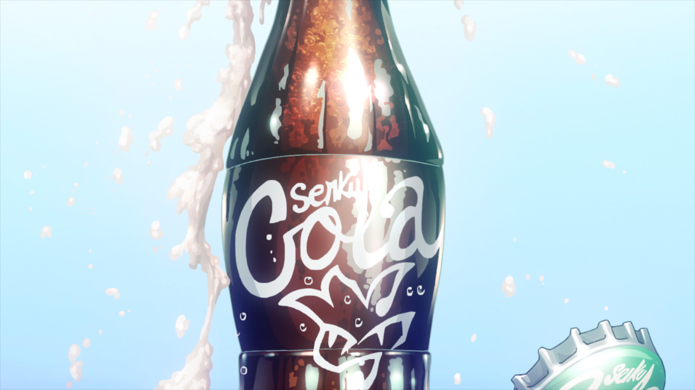
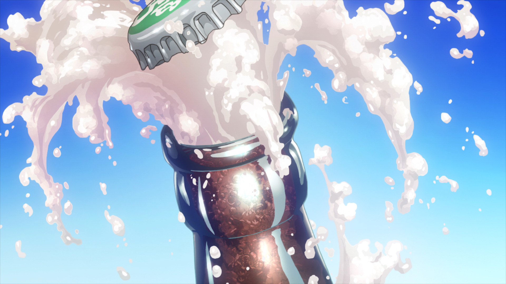
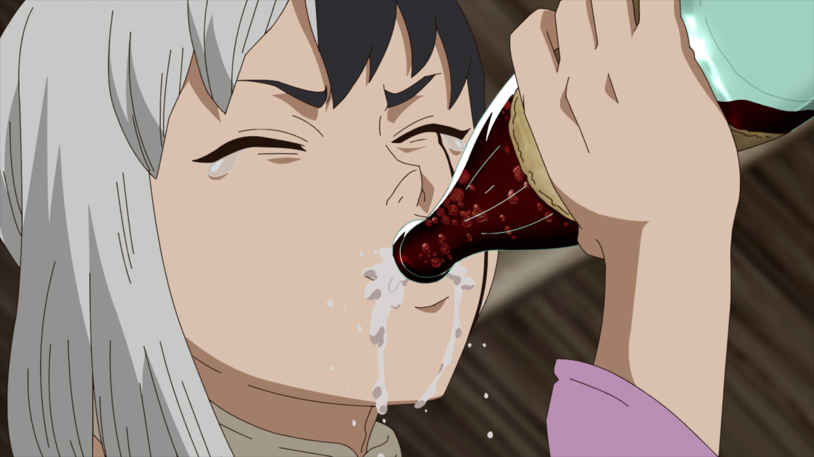

SENKU COLA
Suite à la remarque de Gen Asagiri disant qu'il donnerait n'importe quoi pour boire un Cola dans ce monde de pierre. Senku Ishigami lui fit donc la surprise et créa ce qu'il nommera le Senku Cola, qui s’inspire fortement du Coca Cola, pour satisfaire Gen et le rallier définitivement du côté du Royaume de la Science.
Mecha Senku va vous expliquer comment le préparer il vous suffit de lancer l'animation grâce à se bouton
  